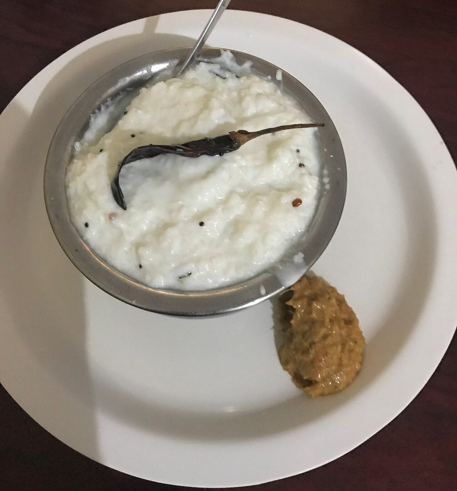

Allergens: none of the ten listed below
Ingredients
Quantities for 4.
- 2 cups Rice Flour
- 2.5 cups Water
- 1/4 cup fresh grated Coconutoptional but common in Kodagu homesoptional
- 2 tbsp Coconut Oilfor the griddle and for oiling your palms
- 1 tsp Salt
Cookware
stovetop, tawa
Checked against the ingredient list for ten allergens: milk, egg, fish, crustaceans, tree nuts, peanuts, sesame, mustard, soy and gluten. Brands vary, so read the label on anything new to you.
Before you start
- Take the dough out in portions and keep the rest covered with a damp cloth; exposed rice dough dries within minutes and will not spread.
- Cut two squares of banana leaf or greaseproof paper for patting the rotis out. A plastic sheet works too.
- Heat the griddle on medium while you shape the first roti so it is ready when you are.
Method
- Bring the water to a boil with the salt and 1 tsp of the coconut oil.
- Turn the heat to its lowest, add the rice flour all at once and stir hard until no dry flour is visible, about 2 minutes.
- Cover and cook on the lowest heat for 4 minutes, then turn the dough out onto a plate.
- Add the grated coconut and knead the hot dough with oiled hands for 3 minutes until smooth and pliable, like soft clay.It must be kneaded hot. Once it cools the starch sets and the roti will crack at every edge.
- Divide into 8 balls and keep them under a damp cloth.
- Place a ball on an oiled sheet and pat it out with your palm and fingertips into a 15 cm round, turning as you go.Pat from the centre outwards and keep the thickness even; thin patches burn before the thick ones cook.
- Lift the roti onto a hot griddle and cook 90 seconds, until the underside shows brown freckles.
- Flip and cook the second side 90 seconds, pressing the edges down with a cloth so it puffs slightly.
- Brush with a little coconut oil, stack in a covered box and repeat with the rest.Stacking them covered lets the steam soften each one; left out singly they stiffen fast.
Storage
Best hot off the griddle. Keeps a day wrapped in a cloth in a covered box; reheat 30 seconds a side on a dry griddle. Do not refrigerate, they turn brittle.
Nutrition Good estimate
Low protein: 5 g a serving, 5% of the calories
| Per serving242 g | Per 100 g | |
|---|---|---|
| Calories | 367 kcal | 152 kcal |
| Protein | 4.9 g | 2 g |
| Carbohydrate | 64.0 g | 26 g |
| of which sugars | 0.4 g | 0 g |
| Fibre | 2.3 g | 1 g |
| Fat | 9.5 g | 4 g |
| of which saturated | 7.4 g | 3 g |
| of which unsaturated | 1.2 g | 1 g |
Estimated from raw ingredients using USDA FoodData Central.
More like this: Vegan Indian recipes · Vegetarian Indian recipes · Gluten-free Indian recipes · Dairy-free Indian recipes · Karnataka recipes
Times, yields, allergens and nutrition are guidance. Use your own judgement on doneness and on storing. More in About.